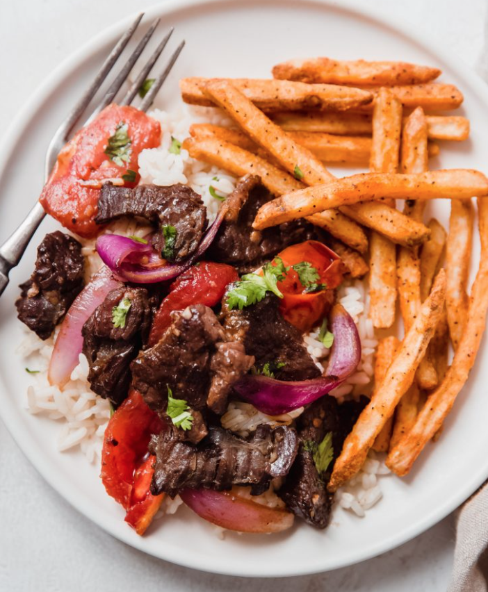

Recipe
- Marinate the beef:
- Add soy sauce and garlic to sliced beef.
- Marinate for 5-7 minutes.
- Add in a pinch of baking soda if meat is tough.
- Make sauce:
- Combine soy sauce, vinegar, aji paste, cornstarch and shake.
- Set rice to auto cook for 15 minutes.
- Set fries to fry in auto frier.
- Go to next step, but don't forget to remove fries!
- Stir fry and put it all together:
- Add oil to wok and let it heat on high.
- Once hot, add beef and saute with gusto until seared.
- Once seared, remove from the pan and place to the side.
- Add onions and cook until slightly soft.
- Once soft, add garlic, tomatoes; saute for 1 minute.
- Return beef back to wok.
- Add prepared sauce and toss to combine.
- Serve:
- Add rice to one side of plate.
- Add fries to other side of plate.
- Top rice or fries with stir fried beef mixture
- Garnish with chopped cilantro if desired.
- Enjoy!
